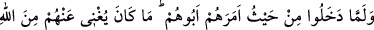
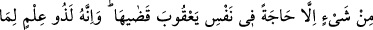
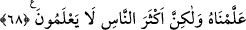

Fakir (Bursevî) der ki: Bu kuş ile bu böcek servet sahibi olup da haris ve cimri
olanların hâline işarettir. Çünkü böylesi zenginler de bir yığın servete sahip oldukları
halde malları tükenecek korkusuyla yedikleri yemekle, hatta kuru ekmekle bile
karınlarını tam doyurmazlar. Biz bu durumdan Allah’a sığınırız.
Buraya kadar yukarıda geçen konuyu, İnsânü’l-uyûn, İbnü’l-Melek’in Şerhu’l-
Meşârık, İbnü’s-Seyyid’in Envâru’l-Meşârık üzerine yazdığı Şerhu’s-Şir‘a,
Muhammed Kürdî’nin Şerhu’t-tarîka’sı ile el-Esrâru’l-Muhammediyye, Luğatü’l-
Muğrib, Hayâtü’l-hayevân, Şerhu’l-Hikem, Şeyhzâde ve Müfti Sa‘dî’nin
Hâşiye’lerinden aldım.
68. Babalarının kendilerine emrettiği yerden (çeşitli kapılardan) girdiler. Gerçi
bu Allah’tan gelecek hiçbir şeyi onlardan savamazdı. Ancak Yâkub içindeki bir
dileği açığa vurmuş oldu. Şüphesiz o, ilim sahibiydi, çünkü ona biz öğretmiştik.
Fakat insanların çoğu bilmezler.
Şehre “babalarının kendilerine emrettiği yerden” yani değişik kapılardan “girdiler.
Gerçi bu” Yâkub’un tavsiyesi ve şehre ayrı yerlerden girmeleri “Allah’tan gelecek”
O’nun hükmettiği “hiçbir şeyi onlardan savamazdı. Ancak Yâkub içindeki bir dileği
açığa vurmuş oldu.”
Yâkub (a.s.)’ın oğullarının farklı kapılardan girmesi şeklindeki görüşü ve oğullarının
da bu konuda ona tâbi olmaları, Allah’ın kendileri hakkında takdir ettiği hiçbir şeyi
onlardan uzaklaştıracak değildir. Fakat Yâkub (a.s.) bu görüşüyle oğullarına nazar
değmesinden sakınma ve onlara acıma duygularını ızhâr etmiş ve mezkûr tavsiyede
bulunmuştur. Yani tedbirin takdîri değiştirmekte tesiri olduğuna inanmamak şartıyla
tedbirin havâtırı uzaklaştırmaktan başka faydası yoktur. Yâkub (a.s.)’ın oğullarının
nazara uğramaları takdir edilmediği için onlara nazar değmemiştir. Yoksa onlara nazar
değmesi takdir edilip de Yâkub (a.s.)’ın tedbiri sayesinde bundan kurtulmuş değillerdir.
Mesnevî’de şöyle der:
Âlemin zerreleri birbirine girse yine
Allah’ın kaza ve kaderine karşı hiçtir hiç!
Gökten yeryüzüne ne yağarsa yağar
Yeryüzü ne kaçabilir, ne de çare ve sığınak bulabilir